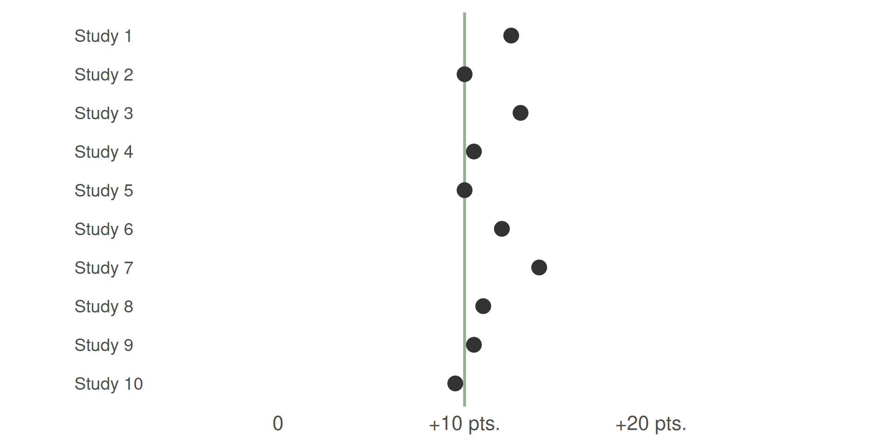
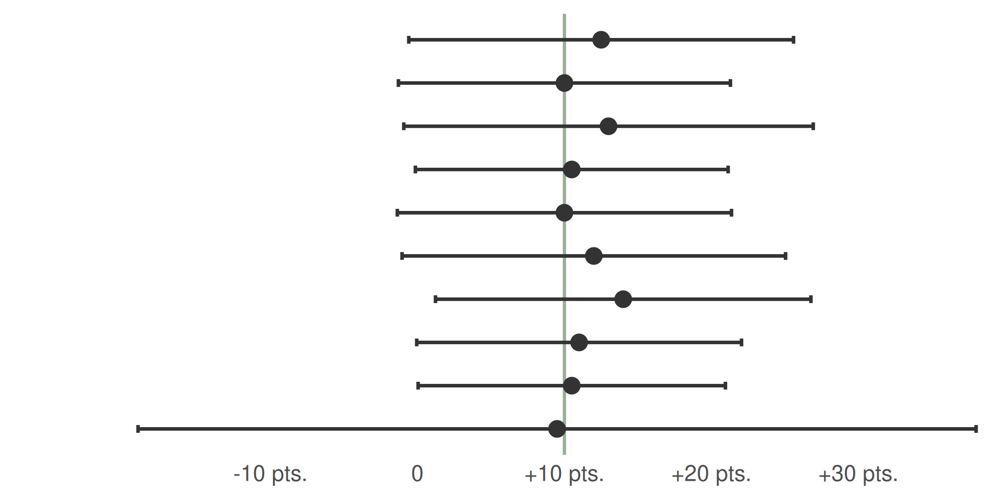
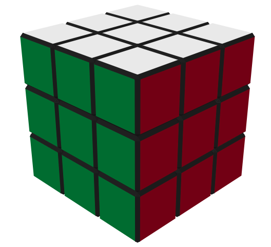
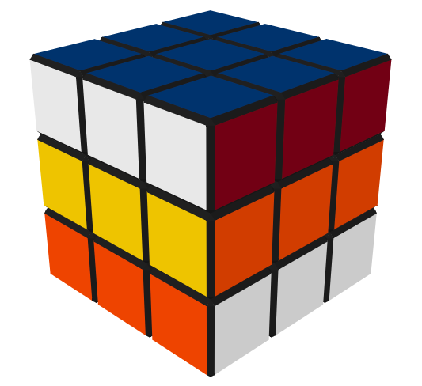
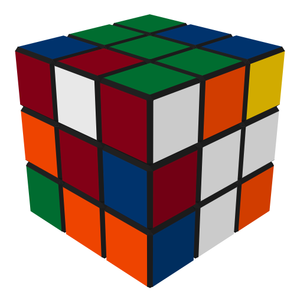
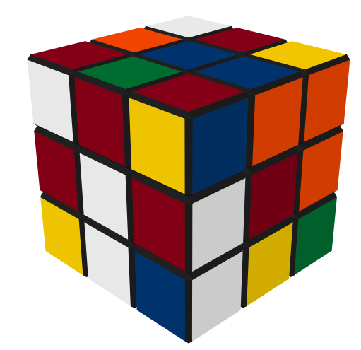
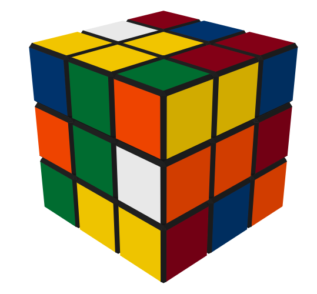
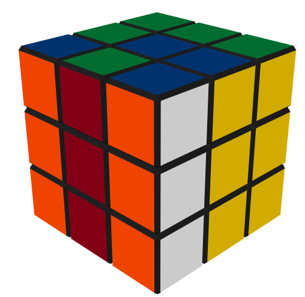
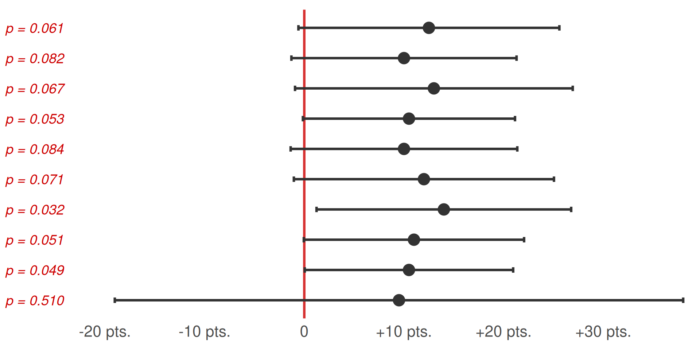
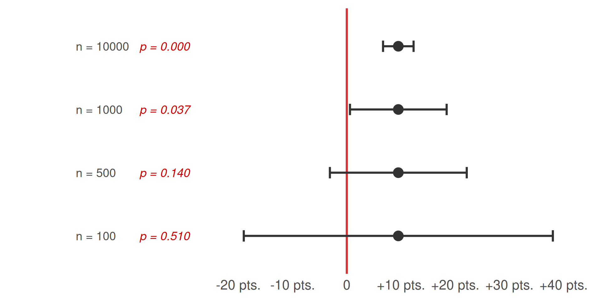

Week 6 - Testing Hypotheses
“Dr.” Mike’s Old Timey Miracle* Study Tonic

“My insides hurt, my
outsides passed accounting!”
–actual student
“Studying has never been easier,
or burned my retinas so severely.”
–real student
“The searing pain motivated me to
improve my test score by up to 10 points.”
–a student
“I blacked out for a few days, when I
regained consciousness my scantron
sheet was covered with ancient runes.
I got an AB!”
–student who wasn’t bribed
*Now with 30% less Cesium 137
What effect does it have on test scores?
What effect does it have on test scores?

Confidence Intervals
Intervals that contain the ‘true’ population value of the parameter in 95% of samples.
I’m 95% confident that the population value falls in this interval.
An interval where there is a 95% probability that it contains the population value.
Probability of containing the population value is 0 or 1 but you can’t know which.

Type I vs Type II Errors

?!
You’re
Pregnant!
Type 1 error
False Positive

?!
You’re Not
Pregnant!
Type 2 error
False Negative
Choosing and appropriate test
Which test is appropriate and what is the null hypothesis?
Report Hypothesis
Participants who have practiced will be able to solve a cube.
Null Hypothesis
H0: Participant did not practice
Alternate Hypothesis
HA: Participant practiced


Confusion Matrix
Pass
| H0: No Practice | HA: Practice |
|---|---|
|
Type 1 Error False Positive |
No Error True Positive |
Fail
| H0: No Practice | HA: Practice |
|---|---|
|
No Error True Negative |
Type 2 Error False Negative |
Hard Test Condition
(α ≈ 0.05 → False Positives and Random Success Should be Rare)





Does this support H0 or HA?
Hard Test Condition
(α ≈ 0.05 → Random Success Should be Rare, False Negative are Possible)
Does this support H0 or HA?
How to talk about significant results
What is the statistical interpretation of the test result?
Naughty Words
Prove
Definitely
Causes
Nice Words
Related
Supports
Likely

What effect does it have on test scores?

p Value hacking
